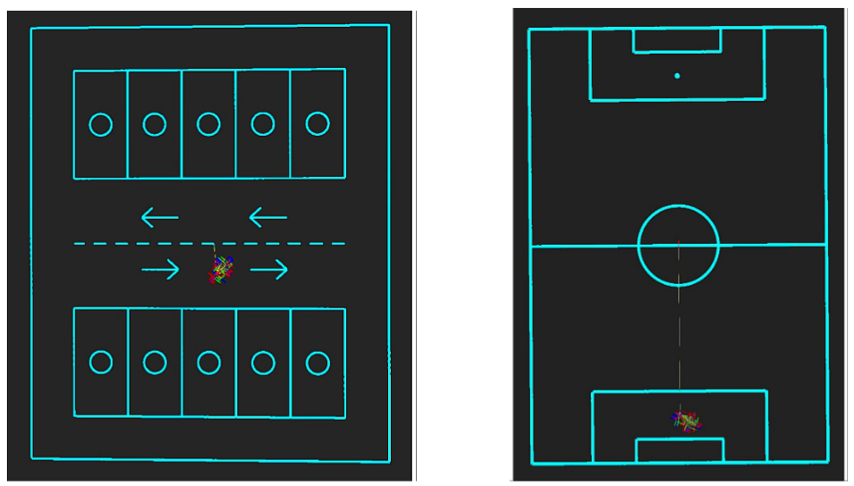
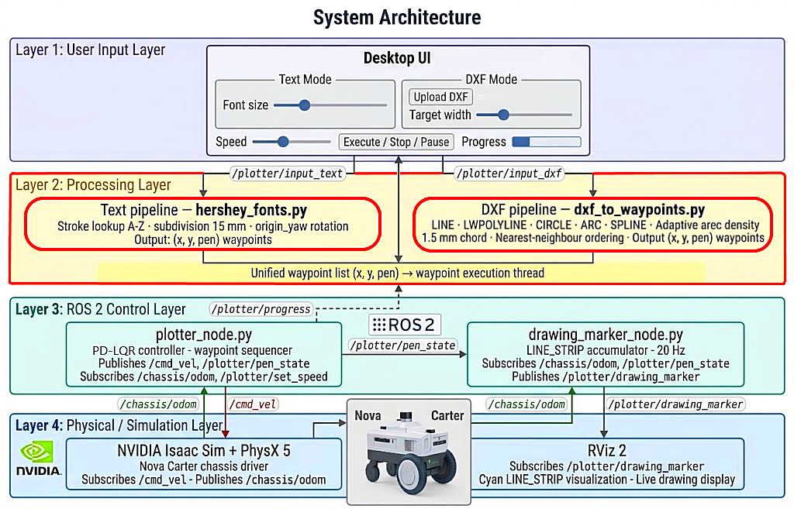
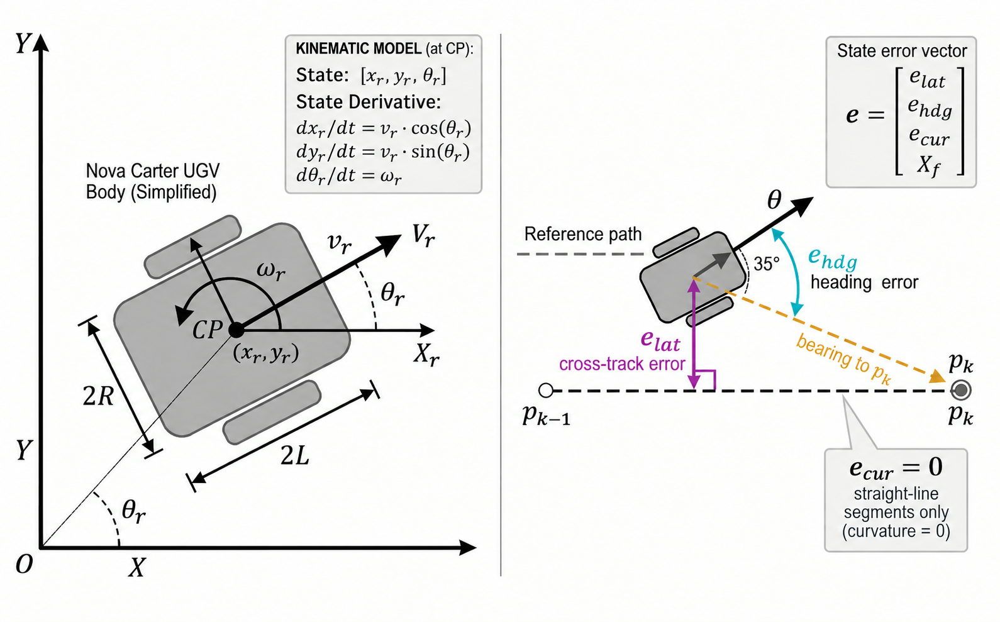
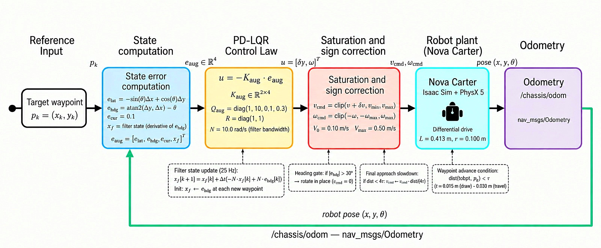
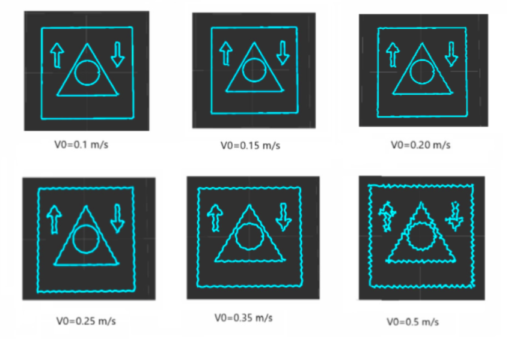

Abstract
Davinci-RoboPlot is a ROS 2-based autonomous mobile plotting platform that lets a differential-drive robot draw text and CAD vector graphics directly on large floor surfaces. It is implemented on the Nova Carter robot in the NVIDIA Isaac Sim physics simulator.
The platform has three parts: a waypoint-generation pipeline that turns Hershey-font text and DXF CAD files into robot waypoints, a PD-LQR path-tracking controller built on an augmented four-element state vector, and a graphical interface for real-time operator control. A conventional proportional (P) controller is used as the comparison baseline.
On a DXF test drawing, the PD-LQR controller finished the job 1.5 to 3.7 times faster than the P-controller at every speed where both were tested. At 0.15 m/s it took 22.14 min against 69.96 min, with a mean waypoint error of 14.5 mm against 19.9 mm and a mean lateral deviation of about 1 mm for both.
- Task time at 0.15 m/s
- 22.1 minP-controller: 70.0 min
- Mean waypoint error
- 14.5 mmat 0.15 m/s; P-controller 19.9 mm
- Speeds tested
- 0.05–0.50m/s, on the same DXF file
What is new
One robot, any drawing
Free text and arbitrary DXF files (lines, arcs, circles, splines) are drawn at a scale you choose, with no application-specific templates and no limit on the output area.
One waypoint format
Hershey text and DXF geometry both become (x, y, pen) waypoints, with arc sampling that adapts to curvature and a reordering that keeps pen-up travel short.
A damped controller
PD-LQR adds a filtered heading-error-rate state to the standard error model, plus deadlock escape, a stall watchdog and a pen-down position gate for long unattended jobs.
Speed-accuracy guidance
Both controllers were tested across a range of base speeds, giving practical tuning guidance for hardware deployment.
Experiments
All runs were done in NVIDIA Isaac Sim.
DXF closure test: PD-LQR and P-controller at 0.15 m/s
The test drawing is a 2 m square, an equilateral triangle, a circle and two arrows. It covers straight lines, closed curves, sharp corners and abrupt heading changes. Both controllers draw the same file at the same base speed.
Text and a football field with PD-LQR
The same pipeline draws Hershey-font text and a multi-geometry DXF layout of a football field, with no changes between jobs.

System architecture
The software runs as five ROS 2 Humble nodes inside Isaac Sim. The plotter node is the hub: it receives jobs from the operator interface, generates waypoints, closes the velocity loop on wheel odometry, and switches the pen or spray gun. The robot localises itself from wheel odometry only, so the environment only needs a flat, traversable floor.


From text or a CAD file to floor marks
Text
Each character is a set of Hershey stroke polylines. Strokes are subdivided into short pieces, mapped onto the floor at the chosen scale, rotated to the robot's heading, and tagged pen-up for the first point of every stroke and pen-down for the rest.
DXF drawings
Lines, polylines, circles, arcs and splines are read with ezdxf, converted to metres from the file's units, centred and scaled to the width you choose, then ordered with a nearest-neighbour pass to cut pen-up travel.

Results
Both controllers drew the same DXF test file at different base speeds: 0.05–0.50 m/s for PD-LQR and 0.10–0.50 m/s for the P-controller. Lateral deviation is the distance from the robot centre to the nearest point on the reference path. Waypoint error is the distance between the robot and a target waypoint when it is reached. Both are averaged over the whole drawing.
Waypoint error and lateral deviation against speed
PD-LQR keeps its mean waypoint error at 14.5–14.7 mm up to 0.20 m/s and its mean lateral deviation at 0.8–1.1 mm up to 0.15 m/s. Both then rise with speed, to 19.7 mm and 9.5 mm at 0.50 m/s.
The P-controller keeps its mean lateral deviation near 1.0 mm up to 0.35 m/s, because it turns on the spot before driving forward. The deviation only rises at higher speeds, to 1.8 mm at 0.40 m/s and 7.4 mm at 0.50 m/s. Its mean waypoint error is higher, at 19.8–19.9 mm up to 0.25 m/s and 24.7 mm at 0.50 m/s.
Drawing output at six speeds

Task time against speed
PD-LQR finishes fastest at 0.20 m/s (18.28 min). Beyond that, corner overshoot forces the robot to stop, rotate and restart more often, so the time rises again to 40.59 min at 0.50 m/s. The P-controller needs 43.58 min at its best (0.35 m/s) and 111.91 min at 0.10 m/s.
Matched-speed comparison
| V0 (m/s) | Time, PD-LQR (min) | Time, P (min) | PD-LQR faster by | Mean waypoint error, PD-LQR / P (mm) | Mean lateral, PD-LQR / P (mm) |
|---|---|---|---|---|---|
| 0.10 | 29.85 | 111.91 | 3.7× | 14.6 / 19.9 | 0.8 / 1.1 |
| 0.15 | 22.14 | 69.96 | 3.2× | 14.5 / 19.9 | 1.1 / 1.0 |
| 0.20 | 18.28 | 61.04 | 3.3× | 14.5 / 19.8 | 1.8 / 1.0 |
| 0.25 | 22.27 | 50.54 | 2.3× | 15.0 / 19.8 | 4.3 / 1.0 |
| 0.35 | 28.47 | 43.58 | 1.5× | 16.2 / 21.3 | 7.9 / 1.1 |
| 0.50 | 40.59 | 116.05 | 2.9× | 19.7 / 24.7 | 9.5 / 7.4 |
The highlighted row is the speed used in the videos above. PD-LQR is faster at every matched speed, and its mean waypoint error is about 5 mm lower (20–27%). Mean lateral deviation is similar at 0.10–0.15 m/s, within 0.3 mm, but the P-controller's stays lower from 0.20 m/s upward, since it aligns its heading before driving.
PD-LQR was also run at 0.05 m/s (34.87 min, mean waypoint error 14.7 mm, mean lateral deviation 0.8 mm), and the P-controller at 0.40 m/s (53.06 min, 22.9 mm, 1.8 mm).
Limitations and future work
Limitations
The current work has four principal limitations that bound the scope of the reported results.
- Simulation-only validation. All experiments were conducted in Isaac~Sim.Real hardware deployment may introduce additional wheel slip on non-ideal surfaces, affects tracking performance relative to the simulation results reported.
- Odometric drift. The platform relies exclusively on wheel odometry for localisation. Drift accumulates without bound over long pen-up travel segments, limiting absolute positioning accuracy for large-scale jobs regardless of controller quality. This is a known limitation of wheel odometry in low-traction conditions.
- Task execution time. The platform completes a 10-car parking lot layout in 6 h 32 min at a base speed of V0 = 0.1 m/s, which is impractical for real-world production deployment. Three factors drive this. First, the fixed base speed is conservatively low, chosen to minimise tracking error. Second, the heading gate (|ehdg| > 30°) forces a full stop and an in-place rotation at every sharp direction change, which adds dead time at each of the hundreds of corner transitions. Third, pen-up repositioning segments between strokes travel at the same slow drawing speed, which adds a substantial amount of non-productive motion. The future work below addresses all three imitations .
Future work
Two main directions are planned.
Hardware validation. The platform will be deployed on a physical robot to validate the simulation results and to quantify the effects of wheel slip, surface irregularities and motor dynamics. An absolute position correction mechanism will also be investigated to address odometric drift over large-scale tasks.
Shorter task time. Execution time will be reduced through three complementary improvements:
- adaptive speed scheduling, which raises V0 on straight segments and lowers it near corners;
- replacing the hard heading gate with a smooth velocity function proportional to |ehdg|, to eliminate full stops; and
- running pen-up travel segments at a higher speed, since marking accuracy is not needed while repositioning.
These improvements are expected to bring the total task time within the 1–2 hour range achieved by commercial systems, while keeping the generalised DXF rendering capability that distinguishes this platform.